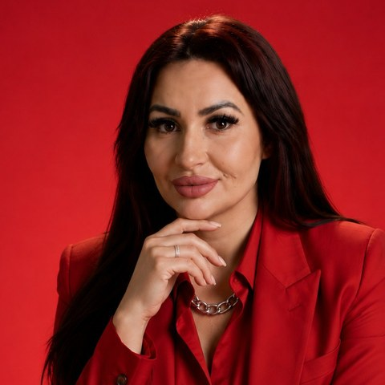

Patricia Claudia Mitro
Prezydentka
Polish Women Chamber of Commerce
Czytaj więcej
O osobie
Prawniczka, mentorka globalnego przywództwa kobiet, certyfikowany coach ICI, doradczyni kariery oraz mentorka w obszarze tradingu i inteligencji finansowej. Ukończyła seminaria doktorskie oraz studia podyplomowe z doradztwa zawodowego w Akademii Nauk Społecznych i Medycznych w Lublinie. Od blisko dwóch dekad tworzy inicjatywy wspierające rozwój ekonomiczny kobiet i ich udział w międzynarodowym biznesie. Jako Prezydentka PWCC rozwija partnerstwa z administracją publiczną, dyplomacją, izbami gospodarczymi i środowiskiem akademickim; zainicjowała Global Women Chamber of Commerce. Założycielka i redaktorka naczelna magazynu Business Women IMPACT, twórczyni Polish Women Chamber TV, CEO GLOBAL WOMEN INVESTMENT, MEDIA & INSURANCE GROUP. Zrealizowała ponad 150 inicjatyw biznesowych, edukacyjnych, wydawniczych i społecznych, docierając do ponad 100 000 kobiet. Współautorka ogólnopolskich raportów o ESG i obronie cywilnej, autorka książek „Przestań czekać – zacznij żyć” oraz „Przewodnik do spełnionego życia: 50 metod i ćwiczeń”. Laureatka wyróżnienia Equality Leaders 2022 Forbes Women i Ambasady Brytyjskiej, członkini Krajowego Biura Rad Kobiet w Polsce. Za swoje największe osiągnięcie uważa wytrwałość — przekształcanie wyzwań w siłę i budowanie przyszłości zgodnej z własnymi wartościami. Języki: polski, angielski.
O organizacji
Jedyna Izba Gospodarcza Kobiet Biznesu w Polsce, działająca na podstawie ustawy o izbach gospodarczych i obejmująca swoimi strukturami wszystkie województwa. Organizator Kongresu Gospodarczego Kobiet Biznesu — Business Women IMPACT 2026.
polishwomenchamber.pl →